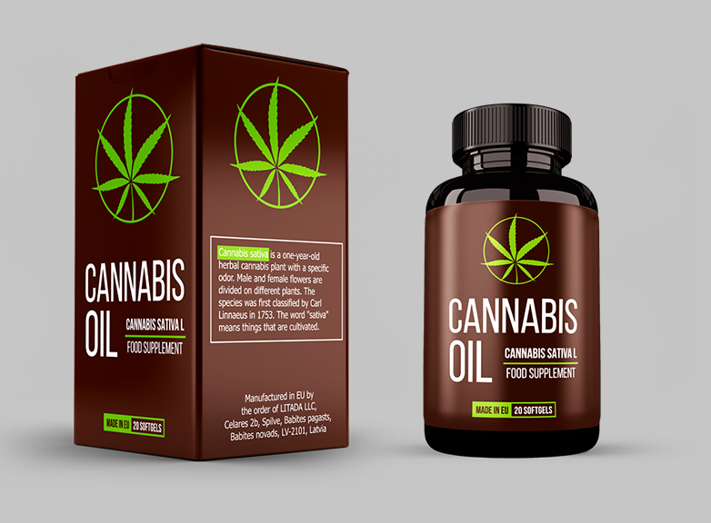

Descoperirea savanților elvețieni a schimbat complet abordarea tratamentului hipertensiunii arteriale. Acum puteți să tratați oscilațiile tensiunii în doar 28 de zile.
Hipertensiunea este cea mai periculoasă boală din lume. Doar în Europa, peste 5 milioane de oameni mor în fiecare an din cauza ei și a consecințelor acesteia! Nimeni nu este protejat de apariția acestei patologii, apare la 98% dintre persoanele peste 50 de ani - la cineva mai devreme, la cineva mai târziu.
Astăzi, savanții elvețieni au reușit să stabilească ADEVĂRATELE CAUZE al hipertensiunii și să ofere o modalitate unică de a le elimina. Cel mai excepțional în această noutate este că nu trebuie să administrați substanțe chimice scumpe pentru a scăpa de cauzele hipertensiunii arteriale! Hipertensiunea poate fi vindecată într-un mod în care a fost tratată în cele mai vechi timpuri. Acum savanții s-au înarmat din nou cu el. Și acest lucru a făcut o adevărată revoluție în tratarea nu numai a hipertensiunii arteriale, ci și a altor boli cardiovasculare.
În acest fel, puteți vindeca așa maladii precum:
- Ateroscleroză
- Boli coronariene
- Tromboză
- Tromboflebită
- Aritmia și stenocardia
- Murmur cardiac
- Hematopoieza (anemie)
- Varice
La o întâlnire cu reporterii, descoperirea savanților elvețieni a fost comentată de cardiologul, medic de categorie superioară, profesorul Petru Andrieș.

Reporterul: Cât de periculoasă este hipertensiunea arterială?
Petru Andrieș: Desigur, hipertensiunea arterială este o patologie periculoasă. Inima se uzează rapid, vasele devin fragile, ceea ce duce la un risc crescut de rupere a acestora. Ruptura unui vas cerebral duce la accident vascular cerebral, al inimii - la atac de cord. Ambele boli sunt fatale.
În plus, presiunea ridicată este periculoasă, deoarece cheagul de sânge într-un vas poate să se detașeze și să înfunde fluxul sanguin. De asemenea, este legat de complicații fatale.
Hipertensiunea arterială uzează rapid întreg organismul. De aceea hipertensiunea este adesea însoțită de așa maladii precum:
- Orbirea
- Insuficiența cardiacă
- Insuficiență renală
- Ateroscleroză
- Boli ale articulațiilor și ale coloanei vertebrale
- Impotență sexuală
- Ischemia creierului
Desigur, hipertensiunea trebuie tratată. Și trebuie să faceți acest lucru cât mai curând posibil.
Reporterul: De ce medicamentele disponibile în farmacii nu pot vindeca hipertensiunea?
Petru Andrieș: Majoritatea medicamentelor din farmacii sunt hipotensive, acțiunea lor vizând eliminarea simptomelor patologiei, adică a tensiunii înalte. Ele au doar un efect pe termen scurt. De îndată ce se termină, tensiunea crește din nou. De aceea, medicamentele antihipertensive trebuie luate toată viața.
In plus, la aceste medicamente se dezvoltă rapid toleranța, și ele trebuie să fie înlocuite cu altele. Funcția medicamentelor antihipertensive este de a proteja persoana de hipertensiunea arterială, dar acestea nu tratează hipertensiunea. Dacă doriți să scăpați complet de boală, trebuie să utilizați alte mijloace.
Întrebarea reporterului: în ce constă descoperirea savanților elvețieni în tratamentul hipertensiunii arteriale?
Petru Andrieș: Savanții de la Institutul elvețian a inimii și vaselor sangvine au descoperit că hipertensiunea arterială este o consecință a contaminării vaselor sangvine cu un tip special de colesterol. Se aseamănă cu grăsimea în apă rece. În timpul vieții, colesterolul se așează pe pereții interiori ai vaselor sangvine într-un strat din ce în ce mai gros. Drept consecință, lumenul util în vase scade. Pentru a asigura o aprovizionare suficientă cu sânge a organelor interne, inima trebuie să mărească tensiunea arterială. Așa se dezvoltă hipertensiunea legată de vârstă.

Savanții elvețieni au descoperit că depunerile de colesterol pot fi distruse de acizii grași polinesaturați – Omega-3, Omega-6, Omega-9. Mai mult de 120 de experimente pe scară largă au fost efectuate înainte de a putea stabili raportul optim al acestor acizi în lupta eficientă împotriva colesterolului. Acest raport s-a dovedit a fi egal cu 1:3:10. Pentru această descoperire și muncă, 3 angajați ai Institutului elvețian a inimii și vaselor sangvine au fost nominalizați la Premiul Nobel pentru medicină.
Aceasta este o descoperire foarte importantă, deoarece face posibilă TRATAREA hipertensiunii arteriale. Nu reduceți tensiunea, vreau să subliniez acest lucru, ci anume tratați hipertensiunea arterială. Deja după aportul lunar de acizi grași Omega nesaturați într-un raport de 1:3:10, presiunea va înceta să mai crească. Persoana se va elibera de dependența de medicamente antihipertensive, își va întări sănătatea și își va prelungi viața.
Întrebarea reporterului: Spuneți-ne, Vă rog, ce medicamente trebuie luate pentru a vindeca hipertensiunea arterială?
Petru Andrieș: După cum sa spus, pentru a curăța vasele sangvine și pentru a trata hipertensiunea, sunt necesari acizi grași Omega nesaturați într-un raport de 1:3:10. În acest raport în natură, ele se găsesc doar într-o singură plantă, și anume în SEMINȚELE DE CANABIS. Savanții au reușit să obțină din semințe un ulei foarte concentrat – în acesta, acizii enumerați se conțin în raportul potrivit și în cantități suficiente pentru a trata hipertensiunea.
Savanții au recomandat voluntarilor să administreze uleiul de canabis foarte concentrat. Rezultatele au fost extraordinare pentru toți - putem spune, că omenirea a găsit un remediu pentru hipertensiunea arterială!
Vreau să vă arăt rezultatele testelor elvețiene. În total au participat 2182 de voluntari. Toți sufereau de hipertensiune arterială și au luat ulei de canabis timp de 28 de zile.
Rezultatele testelor
- Vasele au fost complet curățate de colesterol și alți contaminanți – 96% din persoanele testate
- A scăzut nivelul colesterolului rău în compoziția sângelui - 98% din persoanele testate
- Presiunea s-a stabilizat până la normal - 94% din persoanele testate
- Au dispărut durerile de cap - 99% din persoanele testate
- Îmbunătățirea vederii - 74% din persoanele testate
Întrebarea reporterului: Când uleiul foarte concentrat CBD în capsule va fi disponibil în farmaciile europene?
Petru Andrieș: Cel mai probabil în rețelele farmaceutice CANNABIS OIL degrabă nu va apărea. Cauza este că pentru a fi realizat prin intermediul farmaciilor sunt necesare loturi mari de acest preparat, iar uleiul de canabis este în prezent produs în cantități limitate datorită deficitului de semințe de canabis în Europa. Conform celor mai optimiste previziuni, CANNABIS OIL va apărea în farmacii nu mai devreme de 2022. Acest timp este necesar pentru a organiza achiziționarea de materii prime din Asia sau plantarea de canabis în Europa.
Acum (și cred că va dura câțiva ani) CANNABIS OIL poate fi comandat numai pe site-ul oficial al producătorului.
În ceea ce privește prețul.... La moment, este minim, deoarece uleiul de canabis foarte concentrat este vândut de la producător, ocolind intermediarii. Uleiul în sine poate fi administrat chiar și fără prescripția medicului.
Singurul lucru despre care trebuie de știut este faptul că uleiul de canabis din capsule se vinde în cantități limitate, iar numărul de solicitări pentru acesta crește exponențial zilnic, pe măsură ce tot mai mulți bărbați află despre proprietățile sale extraordinare. Prin urmare, aș recomanda tuturor să lase o solicitare pentru ulei cât mai curând posibil, în timp ce acesta este încă disponibil.
CANNABIS OIL
Accesați site-ul oficial pentru a comanda CANNABIS OIL chiar acum
Comentarii
Natalia Papușoi
Mulțumesc. Am comandat ulei de canabis. Mă voi trata. Deseori tensiunea crește.
Teodora Tăbârță
Și eu am comandat.
Semion Mânăscurtă
Și eu sunt unul dintre cei care au reușit deja să încerce acest ulei. Aveam hipertensiune arterială. A fost, dar nici urmă nu a mai rămas! Acum mă simt complet sănătos. Presiunea nu crește deloc.
Alice Plămădeală
Vă mulțumim pentru „Cannabis oil”!! Presiunea mea demult oscila, am crezut că voi muri. Pastilele obișnuite nu ajutau prea mult. Apoi am văzut acest articol și am comandat ulei. Îl administrez numai de o săptămână, iar presiunea a revenit deja la normal.
Gheorghe Opincă
Am 50 de ani. Capsulele CANNABIS OIL le-am încercat anul trecut. Acestea m-au salvat și pe mine. Presiunea a încetat să se ridice, dar acum fac în mod constant exerciții fizice și încerc să mă alimentez corect! Pentru toți cei care nu au încercat, recomand acest ulei.
Andrei Stratulat
Am citit detaliile despre CBD OIL pe site-ul oficial. Impresionant!
Emilia Păcură
Salut tuturor. Acum am vizitat site-ul acestui Institut de Cardiologie, într-adevăr a rămas o cantitate limitată de acest preparat! Se pare că avem o mulțime de hipertensivi!
Dorina Mămăligă
Hipertensiunea arterială este într-adevăr o boală teribilă. Ceea ce mă deranja cel mai mult era zgomotul constant în urechi. Coșmar adevărat. Mă durea în permanență capul, uneori presiunea o lua razna de-a binelea. Colegii se uită chiorâș. Pe lângă toate începuse să mă deranjeze și somnolența. Capsulele de canabis m-au salvat.
Ștefan Negrea
Uleiul de canabis este un remediu excelent pentru hipertensiunea arterială. Mă tratam cu ajutorul lui. Presiunea a încetat să crească deja după 5 zile de la administrarea acestuia. Am încetat să beau pastile. Mă simt minunat.
Sofia Șeremet
În ziar am citit despre uleiul de canabis pentru tratamentul hipertensiunii arteriale. De asemenea, s-a scris că este un progres în tratament. Trebuie să încerc să comand.
Damian Cristea
Chiar ieri l-am primit prin intermediul curierului. Am reușit să comand la timp.
Marian Lungu
Jumătate de viață am avut hipertensiune arterială. La sfatul unui medic cunoscut am început să administrez ulei de canabis puternic concentrat. Drept urmare, deja de câteva luni presiunea a fost în limitele 110/70, 120/80. De ce mai înainte această plantă nu era folosită în tratamentul bolilor cardiovasculare! Atât de mulți oameni au murit deja.
Cornel Negru
Mulțumesc. Interesant. Am lăsat o solicitare. Sper foarte mult că a mai rămas încă preparat și pentru mine. Fără el, nici nu știu cu ce să mă mai tratez.
Gheorghe Potaie
Multumesc!!!